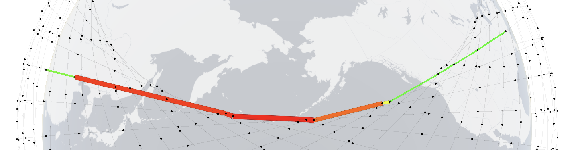
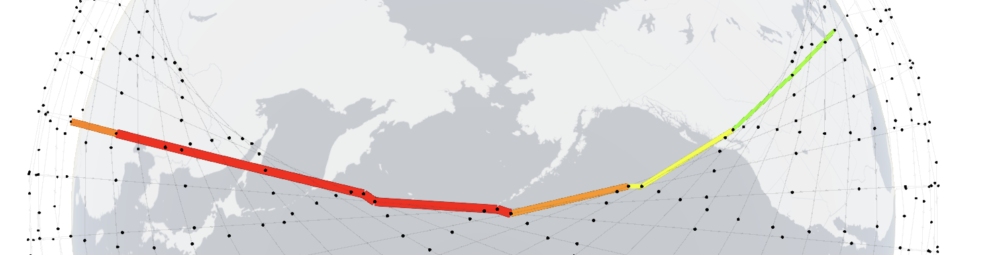

View of the constellation from different parts of the world at random times. x-axis: Observer's azimuth. Objects located 0°: due North, 90°: due East, 180°: due South, and 270°: due West of the observer.
y-axis: Altitude. 0° is horizon and 90° is directly overhead for an observer
Minimum angle of elevation is 30° (shaded in blue)
The simulations below are 50x faster than real-time.
Delhi, India
Oslo, Norway
Santiago, Chile
Christchurch, New Zealand
Link utilizations change over time, even with the input traffic being static.

Path between Chicago and Zhengzhou at 10s. Click here for 3D

Path between Chicago and Zhengzhou at 150s. Click here for 3D